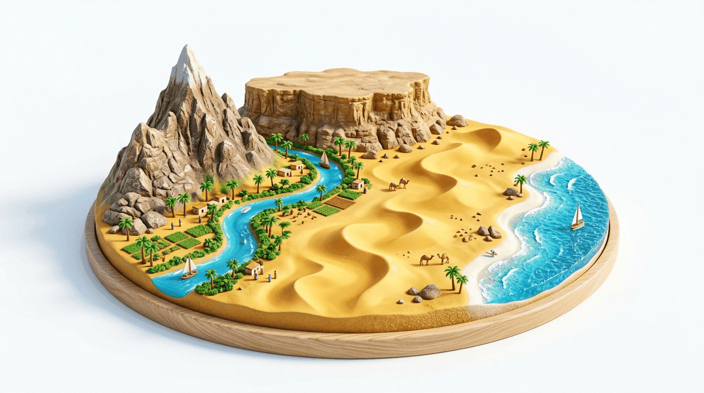

ملزمة امتحانات الشهور الشاملة • الدراسات الاجتماعية

- اختبار شهر أكتوبر (15 درجة): يغطي الوحدة الأولى (أدوات تحديد المواقع، والمصادر الأولية والثانوية) + درس مدينتنا وتطور وسائل النقل.
- اختبار شهر نوفمبر (15 درجة): يغطي الخدمات والمدن الذكية، محافظتي والعيد القومي والشعار، وعلم مصر وموقعها بين قارات العالم ومظاهر السطح.
- السؤال الأول إجباري: خريطة صماء لجمهورية مصر العربية لتثبيت المواقع الجغرافية المهمة.
- زمن الاختبار: 45 دقيقة (حصة دراسية واحدة).
سؤال الخريطة مضمون في جيبك يا بطل لما تبص على الأرقام بتركيز وتعرف مكان البحر ونهر النيل وسيناء والصحراء الغربية.. حل الاختبارات دي بتركيز ومبروك عليك الـ 15 من 15!

1- رسم توضيحي لسطح الأرض أو جزء منه باستخدام مجموعة من الرموز والألوان ومقياس رسم: (............................)
2- كل ما تم نقشه أو تدوينه من قبل أشخاص عاصروا الحدث في زمن وقوعه: (............................)
1- وردة البوصلة توضح الاتجاهات الأصلية والفرعية وتساعد في تحديد المواقع. ( )
2- تميز الريف المصري بوجود المباني الشاهقة ووسائل النقل الحديثة كالقطار الكهربائي. ( )
3- الصور الفضائية تلتقط بواسطة الطائرات وتتميز بالدقة العالية والتفاصيل. ( )
1- النسبة بين المسافة على الخريطة وما يقابلها على الطبيعة تسمى:
( أ- مقياس الرسم | ب- وردة البوصلة | جـ- مفتاح الخريطة | د- خط الاستواء )
2- من المصادر الأولية التي وثقت تاريخ مصر القديم:
( أ- برديات ونقوش الأهرامات | ب- الكتب الحديثة | جـ- الموسوعات | د- مقالات الجرائد اليوم )
3- وسيلة نقل حديثة وصديقة للبيئة تعمل بالكهرباء تسير على خط أحادي مرتفع هي:
( أ- المونوريل | ب- الدواب | جـ- سيارات الديزل | د- المراكب الشراعية )
1- تقع مصر في الركن الشمالي الشرقي لقارة أوروبا. (التصويب: ....................)
2- الاتجاه المقابل لاتجاه الشرق على وردة البوصلة هو اتجاه الشمال. (التصويب: ....................)
• أهمية وجود وردة البوصلة على أي خريطة جغرافية؟
1- تعتبر الأفلام التسجيلية التي صورت أثناء حرب أكتوبر 1973 مصدراً أولياً. ( )
2- تعد مدينة القاهرة هي العاصمة التاريخية والسياسية لجمهورية مصر العربية. ( )
3- الحقيقة هي تعبير عما يشعر به الشخص تجاه موضوع معين وقد تختلف من شخص لآخر. ( )
1- خطوط وهمية رأسية رسمها العلماء لتحديد المواقع شرق وغرب خط جرينتش: (............................)
2- معلومات أو أحداث تم التأكد من صحتها ودقتها بالتجربة والبحث: (............................)
• بين الصور الجوية والصور الفضائية من حيث وسيلة الالتقاط والمساحة المغطاة.
1- يتكون علم جمهورية مصر العربية من ثلاثة ألوان، يدل اللون الأبيض فيه على:
( أ- السلام | ب- دماء الشهداء | جـ- الظلم والاستعمار | د- الحرب )
2- تحتفل محافظة القاهرة بعيدها القومي يوم 6 يوليو تخليداً لـ:
( أ- وضع جوهر الصقلي حجر الأساس لمدينة القاهرة | ب- بناء السد العالي | جـ- ثورة يوليو | د- افتتاح القناة )
3- هضبة تقع في جنوب غرب مصر بالصحراء الغربية هي هضبة:
( أ- الجلف الكبير | ب- التيه | جـ- المقطم | د- العوينات )
• اتخاذ محافظة القاهرة جامع الأزهر الشريف وشمس ساطعة شعاراً رسمياً لها؟
1- تقاس سرعة الرياح بجهاز يسمى الأنيمومتر. ( )
2- تلون المنخفضات على خريطة التضاريس باللون البني الداكن. ( )
3- مبادرة حياة كريمة تهدف إلى تحسين معيشة سكان القرى وتوفير السكن اللائق والخدمات. ( )
1- مساحة واسعة من اليابس تحيط بها المياه من جميع الجهات مثل جزيرة شدوان: (............................)
2- وصف حالة الجو لفترة زمنية طويلة (فصل أو سنة) لمعرفة نوع المحاصيل الزراعية: (............................)
• حفر وافتتاح قناة السويس الجديدة عام 2015 بالنسبة لحركة الملاحة والتجارة؟
1- أعلى قمة جبلية في جمهورية مصر العربية هي قمة جبل:
( أ- سانت كاترين | ب- العوينات | جـ- الشايب | د- علبة )
2- تدخل الرمال البيضاء المنتشرة في الصحراء المصرية في صناعة:
( أ- الزجاج والخلايا الشمسية | ب- الفخار | جـ- السجاد اليدوي | د- الخيامية )
3- محطة الزعفرانة في محافظة البحر الأحمر متخصصة في توليد الكهرباء النظيفة من:
( أ- طاقة الرياح | ب- الطاقة الشمسية | جـ- الفحم | د- الغاز الطبيعي )
1- يحد جمهورية مصر العربية من جهة الجنوب دولة ليبيا. (التصويب: ....................)
2- تقع هضبة التيه في الصحراء الغربية. (التصويب: ....................)
• ماذا يحدث إذا: لم يتم بناء السد العالي في جنوب مصر عند أسوان؟
النموذج الأول (15 درجة):
السؤال الأول: 1- البحر المتوسط (درجة وثلث) | 2- قناة السويس (درجة وثلث) | 3- نهر النيل (درجة وثلث).
السؤال الثاني: 1- الخريطة (3 درجات) | 2- المصدر الأولي (3 درجات).
السؤال الثالث: 1- (✓) صواب (درجتان) | 2- (✗) خطأ - هذا تميز الحضر والمدن (درجة ونصف) | 3- (✗) خطأ - الصور الجوية هي التي تلتقط بالطائرات (درجة ونصف).
النموذج الثاني (15 درجة):
السؤال الأول: 1- مقياس الرسم (درجتان) | 2- برديات ونقوش الأهرامات (درجتان) | 3- المونوريل (درجتان).
السؤال الثاني: 1- قارة أفريقيا (درجتان ونصف) | 2- اتجاه الغرب (درجتان ونصف).
السؤال الثالث: تساعد في تحديد الاتجاهات الأصلية والفرعية ومعرفة موقع أي مكان بالنسبة للأماكن الأخرى بدقة (4 درجات).
النموذج الثالث (15 درجة):
السؤال الأول: 1- (✓) صواب (درجتان) | 2- (✓) صواب (درجتان) | 3- (✗) خطأ - هذا تعريف الرأي وليس الحقيقة (درجتان).
السؤال الثاني: 1- خطوط الطول (درجتان ونصف) | 2- الحقائق (درجتان ونصف).
السؤال الثالث: الصور الجوية: تلتقط بالطائرات وتغطي مساحات محدودة وتظهر تفاصيل دقيقة. الصور الفضائية: بالأقمار الصناعية وتغطي مساحات شاسعة وتلتقط صوراً كروية أكبر (4 درجات).
النموذج الأول (15 درجة):
السؤال الأول: 1- البحر الأحمر (درجة وثلث) | 2- شبه جزيرة سيناء (درجة وثلث) | 3- محافظة القاهرة (درجة وثلث).
السؤال الثاني: 1- السلام (درجتان) | 2- وضع جوهر الصقلي حجر الأساس للقاهرة (درجتان) | 3- هضبة الجلف الكبير (درجتان).
السؤال الثالث: جامع الأزهر لأنه أهم معالمها التاريخية والإسلامية، والشمس الساطعة ترمز إلى أن الأزهر منارة الإسلام التي تنير العالم أجمع (5 درجات).
النموذج الثاني (15 درجة):
السؤال الأول: 1- (✓) صواب (درجتان) | 2- (✗) خطأ - تلون بالأخضر الداكن (درجتان) | 3- (✓) صواب (درجتان).
السؤال الثاني: 1- الجزيرة (درجتان ونصف) | 2- المناخ (درجتان ونصف).
السؤال الثالث: تقليل زمن مرور السفن من 20 إلى 11 ساعة، استيعاب سفن أكبر حجماً، والسماح بالمرور في الاتجاهين دون توقف وزيادة الدخل القومي (4 درجات).
النموذج الثالث (15 درجة):
السؤال الأول: 1- سانت كاترين (درجتان) | 2- الزجاج والخلايا الشمسية (درجتان) | 3- طاقة الرياح (درجتان).
السؤال الثاني: 1- دولة السودان (درجتان ونصف) | 2- شبه جزيرة سيناء (درجتان ونصف).
السؤال الثالث: لتعرضت القرى والمدن للغرق بالفيضانات ولأصيبت مصر بالجفاف في سنوات انخفاض النيل ولما تمكنا من توليد الكهرباء المائية (4 درجات).